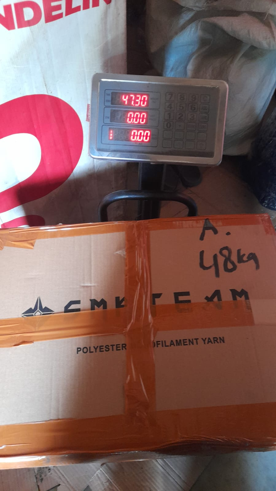

Lion Parcel Terdekat di Cicalengka: Alamat, Jam Buka, dan Cara Mengirim Paket

Sedang mencari Lion Parcel terdekat di Cicalengka untuk mengirim paket ke keluarga, teman, pelanggan, atau rekan bisnis? Memilih lokasi agen yang mudah dijangkau dapat membantu Anda menghemat waktu saat menyerahkan paket dan menanyakan layanan pengiriman.
Salah satu lokasi yang dapat Anda periksa adalah Lion Parcel Bandung POS101 Nanjungmekar, Rancaekek, Kabupaten Bandung, Jawa Barat. Lokasi ini bisa menjadi pilihan bagi masyarakat di sekitar Cicalengka, Nanjungmekar, Rancaekek, dan wilayah sekitarnya. Periksa rute melalui Google Maps untuk memastikan jarak dan waktu perjalanan dari posisi Anda.
📦 Mau Mengirim Paket dari Cicalengka?
Hubungi Lion Parcel Bandung POS101 untuk menanyakan ongkir, layanan pengiriman, serta informasi sebelum datang ke lokasi.
💬 Chat WhatsApp 0851-8309-04861. Alamat Lion Parcel Terdekat untuk Wilayah Cicalengka
Bagi Anda yang berada di Cicalengka dan sedang mencari lokasi pengiriman paket, berikut informasi alamat Lion Parcel Bandung POS101 yang dapat dijadikan acuan untuk mengecek rute perjalanan.
- Nama agen: Lion Parcel Bandung POS101 Nanjungmekar Rancaekek.
- Alamat: Jl. Raya Barat Cicalengka RT 1 RW 1, Nanjung Mekar, Rancaekek, Kabupaten Bandung, Jawa Barat.
- Jam operasional: Senin–Minggu, pukul 08.00–20.00 WIB, sesuai informasi operasional yang tersedia.
- WhatsApp: 0851-8309-0486.
Sebelum berangkat, sebaiknya buka tautan Google Maps di bawah ini untuk memeriksa rute dari lokasi Anda. Anda juga dapat menghubungi agen terlebih dahulu untuk memastikan jam operasional dan layanan yang tersedia pada hari kunjungan.
📍 Lokasi Lion Parcel Bandung POS101 Nanjungmekar
Jl. Raya Barat Cicalengka RT 1 RW 1, Nanjung Mekar, Rancaekek, Kabupaten Bandung, Jawa Barat.
2. Layanan Pengiriman Apa Saja yang Bisa Ditanyakan?
Kebutuhan setiap pengirim berbeda. Ada yang ingin mengirim dokumen, pakaian, barang dagangan, oleh-oleh, hingga paket untuk keperluan usaha. Sebelum mengirim, sampaikan jenis barang dan alamat tujuan agar layanan yang sesuai dapat diperiksa.
Beberapa hal yang dapat Anda tanyakan kepada agen antara lain:
- Pengiriman dalam negeri: tanyakan pilihan layanan ke kota tujuan, tarif, dan estimasi waktu pengiriman.
- Pengiriman internasional: tanyakan ketersediaan negara tujuan, tarif, persyaratan dokumen, dan ketentuan barang.
- Pengiriman untuk bisnis online: konsultasikan kebutuhan pengiriman barang kepada pelanggan di berbagai wilayah.
- Pengecekan ongkir: siapkan kota tujuan, berat paket, serta ukuran kemasan agar informasi tarif lebih akurat.
Ketersediaan layanan, jenis barang yang diterima, tarif, dan estimasi pengiriman mengikuti ketentuan Lion Parcel yang berlaku. Sebaiknya lakukan konfirmasi sebelum menyerahkan paket.
3. Cara Mengirim Paket di Lion Parcel
Jika Anda baru pertama kali menggunakan layanan ekspedisi, berikut langkah sederhana yang dapat disiapkan sebelum datang ke agen.
- Kemas barang dengan aman. Gunakan kardus atau pembungkus yang sesuai dengan jenis barang.
- Tulis alamat penerima dengan lengkap. Sertakan nama, nomor telepon, alamat, kota, dan kode pos.
- Siapkan informasi paket. Ketahui berat, ukuran, serta isi barang yang akan dikirim.
- Tanyakan ongkir. Periksa tarif dan pilihan layanan yang tersedia untuk tujuan Anda.
- Pastikan ketentuan pengiriman. Beri tahu petugas mengenai isi paket, terutama jika barang membutuhkan penanganan khusus.
- Simpan bukti pengiriman. Setelah transaksi selesai, simpan nomor resi untuk memantau perjalanan paket.
Dengan menyiapkan informasi tersebut, proses konsultasi dan pengiriman dapat berjalan lebih mudah.
4. Tips Memilih Agen Lion Parcel di Sekitar Cicalengka
Saat memilih lokasi pengiriman, jangan hanya mempertimbangkan jarak. Pastikan juga lokasi dapat ditemukan dengan jelas dan layanan yang dibutuhkan tersedia.
- Periksa alamat dan rute melalui Google Maps.
- Pastikan jam operasional sebelum berangkat.
- Tanyakan tarif sebelum menyetujui pengiriman.
- Konfirmasikan apakah jenis barang Anda dapat dikirim.
- Simpan kontak agen agar mudah menanyakan informasi berikutnya.
Jika Anda berada di Cicalengka, Nanjungmekar, atau Rancaekek, bandingkan rute dari lokasi Anda untuk menentukan tempat pengiriman yang paling praktis.
📲 Tanyakan Lokasi dan Ongkir Sebelum Datang
Masih bingung mencari rute atau ingin mengecek tarif pengiriman? Hubungi Lion Parcel Bandung POS101 melalui WhatsApp.
💬 Hubungi Agen SekarangKesimpulan
Jika Anda mencari Lion Parcel terdekat di Cicalengka, Lion Parcel Bandung POS101 Nanjungmekar Rancaekek dapat menjadi salah satu lokasi yang Anda periksa. Gunakan Google Maps untuk melihat rute dari posisi Anda dan hubungi agen terlebih dahulu untuk memastikan jam operasional serta layanan yang dibutuhkan.
Baik untuk pengiriman pribadi maupun kebutuhan usaha, siapkan alamat tujuan, berat paket, ukuran kemasan, dan informasi isi barang sebelum menanyakan ongkir. Dengan begitu, Anda bisa memperoleh informasi yang lebih sesuai sebelum mengirim paket.
Nama Agen: Lion Parcel Bandung POS101 Nanjungmekar Rancaekek
Jam Operasional: Senin–Minggu, 08.00–20.00 WIB
Alamat: Jl. Raya Barat Cicalengka RT 1 RW 1, Nanjung Mekar, Rancaekek, Kabupaten Bandung
WhatsApp: 0851-8309-0486